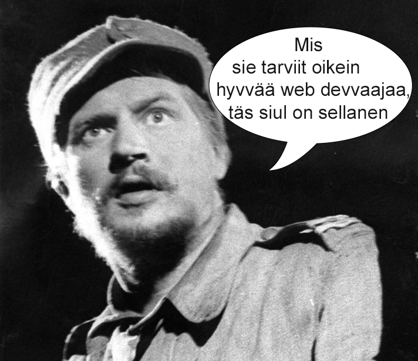

About me
My name is Akseli Miettinen and I was born Kuopio, Finland, '87. After sixth form I moved to Jyväskylä to study tourism and got my bachelor's degree in Hospitality Management in '08. Then I spent a couple years abroad working as a tourist guide (in Tenerife, Phuket, Alanya and Mallorca). After that I returned to Finland to work for the same company but in a desk job (sales) in Helsinki. When covid19 hit tourism industry I decided it would be a great opportunity to take some study leave to educate myself and dive into coding, which had interested me for a while already.
I live in Helsinki with my girlfriend and our lovely little girl who joined our family in March 2021 🥰👨👩👧
I love the outdoors and keeping in shape. I'm not willing to give up good food but I get a lot of energy from excercising. My hobbies include hiking, running, gym, ukulele, juggling (my girlfriend's a circus arts teacher), video and games and Dungeons & Dragons.
Today and future ambitions

I had done some online courses but I wanted to learn in a more efficient way so I applied to Helsinki Business Colleges Full Stack Web Developer programme and got in. After fall period 2021 I will go on internship and I'm aiming to graduate spring 2022 with the degree of software developer.
More about the programme here
I've grown passionate about web development. I'm hungry for learning more and I love searching solutions. I've learned to accept the fact that sometimes debugging can take me to the brink of insanity with frustration because when I finally manage to find and fix the issue, the feeling is worth it all.
I future I'm particularly interested in deepening my understanding about the back end and "what's happening under the hood".
Skill stack
Node.js
What I love about Node.js is that I get to fully use my Javascript skills and you can write both the front the back end with the same language seamlessly. Here's my Node.js projct Natours which uses server side rendering and MVC arcitechture: Natours
Signing up does not work in Heroku at the moment, but to test logging in you can use email: monica@example.com and password: test1234 or admin@natours.io and test1234. To make test purchase you can use card number 4242 4242 4242 4242.
People skills
I have 20 years of experience in working in customer service field, counting the years I worked part time alonside my studies. I've worked in grocery stores, restaurants, bars, events, as well as a travel guide abroad and lastly in sales for a travel agency. So I have a lot of expericence working face-to-face with the customer and I'm also definitely a team player who can listen to others well but also I'm not afraid to pitch my own ideas when I feel they are well argued.
Javascript
Javascript is a fantastic language for a web developer because of it's versitality and because it has so many great tools built for it.
Here's my take on classic Snake game built with vanilla js: Snake game
HTML5 + CSS
I wouldn't be much of a web developer if I wouldn't have the basics covered.
When it comes to design, I believe less is usually more. For UI/UX solutions should be intuitive for the user so the user doesn't have to think when using your app.
Here's some animated boxes I wrote to challenge myself with css.
PHP and Symfony
PHP is a classic backend language in web dev with a long history and a huge library at your fingertips with Composer package manager. Symfony 5 framework makes it extremely powerful backend tool. Here's a an recipes app that has backend powered with Symfony: Recipes (Give the recipes a few seconds to load, database in Heroku.com likes to take naps 😊)
React.js
Once you've learned how to walk (understand js) you can start running by using a js framework like React.js. It takes the frontend programming to the next level. With it super efficient hooks it is my favourite tool building the front.
Here's a classic app to test your reaction speed: Speedgame